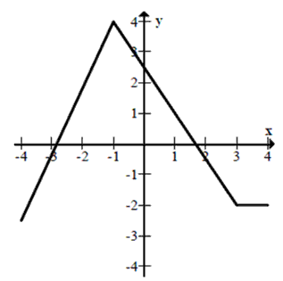
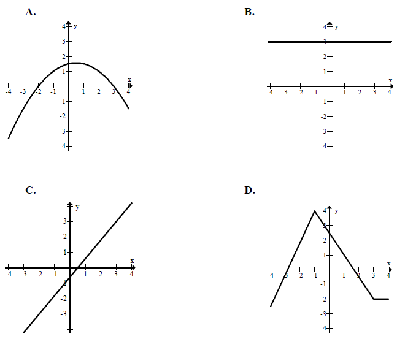
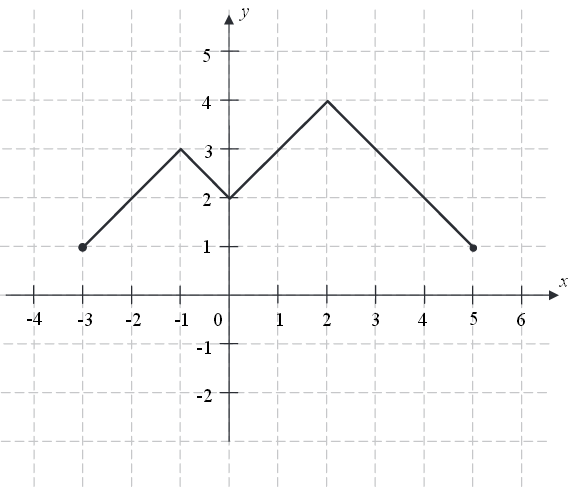

Miejsca zerowe funkcji
Zacznijmy od przypomnienia następujących pojęć:
- argumenty funkcji - to \(x\)-y (z osi poziomej układu współrzędnych),
- wartości funkcji - to \(y\)-ki (z osi pionowej układu współrzędnych).
Definicja
Miejsce zerowe funkcji - to taki argument \(x\) dla którego funkcja
przyjmuje wartość \(0\).
W tym nagraniu wideo wyjaśniam co to są miejsca zerowe funkcji oraz pokazuję
jak je obliczać.
Wyznacz miejsca zerowe następujących funkcji:
a) \(f(x)=3x-12\)
b) \(f(x)=3\sqrt{2}-x\)
a) \(x=4\)
b) \(x=3\sqrt{2}\)
Wyznacz miejsca zerowe następujących funkcji:
a) \(f(x)=(x-1)(x+5)\)
b) \(f(x)=x(4x-\sqrt{2})\)
a) \(x=1\) oraz \(x=-5\)
b) \(x=0\) oraz
\(x=\frac{\sqrt{2}}{4}\)
Wyznacz miejsca zerowe funkcji \(f(x)=13x(1-3x)(\sqrt{2}x-2)(x^2-4)\) .
\(x=0\) lub \(x=\frac{1}{3}\) lub \(x=\sqrt{2}\) lub \(x=2\) lub
\(x=-2\)
Wyznacz miejsca zerowe funkcji \(f(x)=4x^2-20x+25\).
\(x=\frac{5}{2}\)
Wyznacz miejsca zerowe funkcji \(f(x)=\frac{(x^2+4x+4)(3-x)}{x}\).
\(x=-2\) lub \(x=3\)
Wyznacz miejsca zerowe funkcji \(f(x)=\frac{(x^2-9)(x+2)}{2x+6}\).
\(x=-2\) lub \(x=3\)
Miejscem zerowym funkcji kwadratowej
\(y=-(-x-7)(1+x)\)
jest
A.\( x=7 \)
B.\( x=1 \)
C.\( x=0 \)
D.\( x=-1 \)
D
Dany jest wykres funkcji  Ile miejsc zerowych ma ta funkcja w przedziale \(\langle -\pi , 1 \rangle\)?
A.\( 0 \)
B.\( 1 \)
C.\( 2 \)
D.\( 3 \)
B
Miejscami zerowymi funkcji kwadratowej
\( y = -3(x-7)(x+2)
\) są
A.\(x=7, x=-2 \)
B.\(x=-7, x=-2 \)
C.\(x=7, x=2 \)
D.\(x=-7, x=2 \)
A
Wskaż wykres funkcji, która w przedziale \( \langle -4, 4 \rangle \) ma dokładnie
jedno miejsce zerowe. 
C
Funkcja \(f\) jest określona wzorem \( f(x)=\begin{cases} {x-4\ \ \ \quad \text{
dla } x\le 3}\\ {-x+2\quad \text{ dla }x>3} \end{cases} \). Ile miejsc zerowych ma ta funkcja?
A.\( 0 \)
B.\( 1 \)
C.\( 2 \)
D.\( 3 \)
A
Funkcja liniowa określona jest wzorem \(f(x) = -\sqrt{2}x + 4\). Miejscem zerowym
tej funkcji jest liczba
A.\( -2\sqrt{2} \)
B.\( \frac{\sqrt{2}}{2} \)
C.\( -\frac{\sqrt{2}}{2} \)
D.\( 2\sqrt{2} \)
D
Funkcja \( f \) jest określona wzorem \( f(x)=\begin{cases} -3x+4 &\text{dla }x\lt
1\\ 2x-1 &\text{dla }x\ge 1 \end{cases} \). Ile miejsc zerowych ma ta funkcja?
A.\(0 \)
B.\(1 \)
C.\(2 \)
D.\(3 \)
A
Oblicz miejsca zerowe funkcji \[f(x)=\begin{cases} 2x+1\quad \text{dla }x\le 0\\
x+2\quad \text{dla }x>0 \end{cases} \]
\(x=-\frac{1}{2}\)
Miejscem zerowym funkcji \(f\) określonej wzorem \(f(x)=\begin{cases} x^2-1\quad
\text{ dla } x\in (-\infty ,-4 \rangle\\ 5x+10\quad \text{ dla } x\in (-4 ,2)\\ x+4\quad \text{ dla
} x\in \langle 2,+\infty ) \end{cases} \)
jest:
A.\( -4 \)
B.\( -2 \)
C.\( -1 \)
D.\( 1 \)
B
Liczba \((−2)\) jest miejscem zerowym funkcji liniowej \(f(x)=mx+2\). Wtedy
A.\( m=3 \)
B.\( m=1 \)
C.\( m=-2 \)
D.\( m=-4 \)
B
Liczba \( 1 \) jest miejscem zerowym funkcji liniowej
\(
f(x)=(2-m)x+1 \). Wynika stąd, że
A.\(m=0 \)
B.\(m=1 \)
C.\(m=2 \)
D.\(m=3 \)
D
Miejscem zerowym funkcji liniowej
\(f(x)=-2x+m+7\) jest
liczba \(3\). Wynika stąd, że
A.\( m=7 \)
B.\( m=1 \)
C.\( m=-1 \)
D.\( m=-7 \)
C
Dana jest funkcja \(f(x) = (1 + m^2)x - 5\). Oblicz współczynnik \(m\) jeżeli
wiadomo, że \(x = 1\) jest miejscem zerowym funkcji \(f(x)\).
\(m=-2\) lub \(m=2\)
Liczba
\(x=-7\) jest miejscem zerowym funkcji liniowej
\(f(x)=(3-a)x+7\) dla
A.\( a=-7 \)
B.\( a=2 \)
C.\( a=3 \)
D.\( a=-1 \)
B
Dla jakiego parametru \(m\) liczba
\(x=1\) jest miejscem
zerowym funkcji
\(f(x)=2x^2+mx\)?
A.\( m=-2 \)
B.\( m=2 \)
C.\( m=4 \)
D.\( m=-4 \)
A
Liczba
\(x=2\) jest miejscem zerowym funkcji
\(f(x)= mx^2-m-9\) dla
A.\( m=1 \)
B.\( m=2 \)
C.\( m=3 \)
D.\( m=4 \)
C
Miejscami zerowymi funkcji \( f(x)=\frac{(x-2)(x^2-6x+9)}{x^2-9} \) są liczby:
A.\(2 \)
B.\(2;3 \)
C.\(-2;3 \)
D.\(-3;2;3 \)
A
Liczba \((-3)\) jest miejscem zerowym funkcji
\(f(x)=(2m-1)x+9\). Wtedy
A.\( m=-2 \)
B.\( m=0 \)
C.\( m=2 \)
D.\( m=3 \)
C
Funkcja
\(f(x)=3x(x^2+5)(2-x)(x+1)\) ma dokładnie
A.dwa miejsca zerowe.
B.trzy miejsca zerowe.
C.cztery miejsca zerowe.
D.pięć miejsc zerowych.
B
Reszta z dzielenia liczby \(45\) przez \(6\) jest miejscem zerowym funkcji
\(f(x)=(m+2)x+15\). Wtedy
A.\( m=-7 \)
B.\( m=-3 \)
C.\( m=0 \)
D.\( m=3 \)
A
Miejscem zerowym funkcji liniowej określonej wzorem \(f(x)=-\frac{2}{3}x+4\) jest
A.\( 0 \)
B.\( 6 \)
C.\( 4 \)
D.\( -6 \)
B
Na rysunku przedstawiono wykres funkcji \(f\).  Funkcja \(h\) określona jest dla \(x\in \langle -3,5 \rangle \)
wzorem \(h(x)=f(x)+q\), gdzie \(q\) jest pewną liczbą rzeczywistą. Wiemy, że jednym z miejsc
zerowych funkcji \(h\) jest liczba \(x_0=-1\).
a) Wyznacz \(q\).
b)
Podaj wszystkie pozostałe miejsca zerowe funkcji \(h\).
\(q=-3\), \(x=1\) lub \(x=3\)